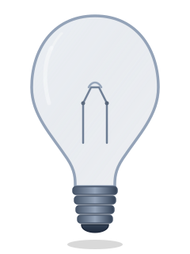

Hoạt động 2: Light Switch
Bật / Tắt Bóng Đèn
Sinh viên: Lê Cao Duy Khang • MSSV: 125000847 • Đại học Lạc Hồng (LHU)

Trạng thái: Đèn Tắt • Nền Đen (Dark Mode)
Xem giải thích mã JavaScript (Bare-metal DOM)
// 1. Lắng nghe sự kiện click trên nút có id 'toggle-btn'
toggleBtn.addEventListener('click', () => {
isLightOn = !isLightOn;
// 2. Thay đổi thuộc tính src của hình ảnh cái đèn
bulbImg.src = isLightOn ? 'assets/bulb-on.svg' : 'assets/bulb-off.svg';
// 3. Thay đổi màu nền của body (Dark/Light Mode)
document.body.classList.toggle('light-mode', isLightOn);
});